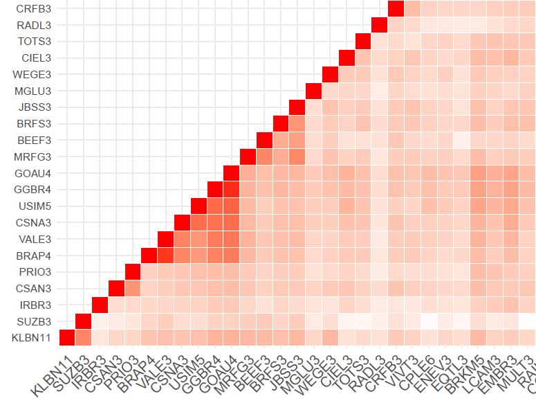
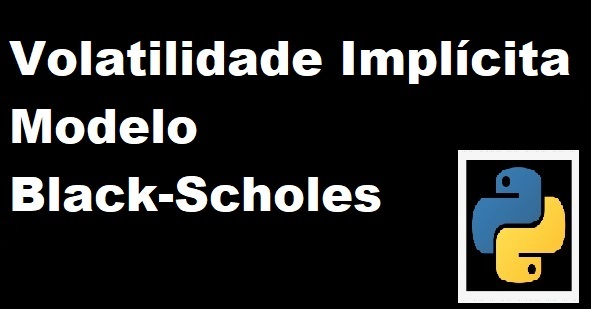

Blog
Alternative link:
Meus Pacotes
Nos artigos abaixo, apresento os pacotes que sou autor, coautor e mantenedor.
Pacote GBcurves
Baixar dados diários da curva de juros do Brasil, Rússia e China no R
O objetivo desse pacote é facilitar o trabalho do pesquisador em obter as taxas da curva de juros, visto que geralmente são compilados em plataformas pagas. Documentação.
Pacote Nelson-Siegel-Svensson
Modelo Nelson-Siegel-Svensson Dinâmico utilizando o filtro de Kalman
Este pacote implementa os modelos Dinâmicos de Nelson-Siegel-Svensson (DNSS) com filtro de Kalman em Python. O objetivo desse pacote é facilitar o trabalho do pesquisador ao otimizar, ajustar e prever a curva de juros em uma única etapa. Documentação.
Web Scraping
Nos artigos abaixo, apresento alguns códigos sobre alguns web scraping.

Web scraping com RSelenium - Investing.com
Raspando e salvando dados de preço de ações utilizando o R
Para quem depende de base de dados 0800, é sempre um desafio conseguir as informações desejadas. Quando se trata do site Investing.com, há duas formas de pegar dados históricos:
Web Scraping de retornos de ações e Carteira de Mínima Variância
Esse artigo é 2 em 1: vamos raspar dados sobre retornos de ações e calcular os pesos de uma carteira de mínima variância global. Os pesos dessa carteira serão baseados nas ações que compõem o DIVI.
Mercado de Capitais
Nos artigos abaixo, apresento exemplos sobre alguns tópicos de Mercado.

Gráfico de correlações com ações do IBOV
Heatmap no R
Nessa artigo, apresento algumas linhas de códigos para gerar um gráfico de correlações com ações do IBOV. O código para raspar os retornos das ações é o mesmo em Web Scraping de retornos de ações.
Smile da Volatilidade
Gráficos da Volatilidade Implícita em Python
O smile da volatilidade é uma representação gráfica do Strike (K) e da Volatilidade Implícita (VI) de um grupo de opções com o mesmo ativo subjacente e data de vencimento.

Volatilidade Implícita
Utilizando aproximações de Black-Scholes (BS) em Python
A volatilidade implícita é uma estimativa da variabilidade futura do ativo subjacente ao contrato de opções. Essa estimativa é derivada do modelo Black-Scholes.
Modelo Black-Scholes em Python
Código e exemplos
O modelo Black-Scholes (BS), também conhecido como modelo Black-Scholes-Merton, é um modelo matemático para precificar um contrato de opções.
GANHE mais DINHEIRO, pergunte-me como
Função Constant Relative Risk Aversion (CRRA)
Imagine a seguinte propaganda: “Compre minha DICA de INVESTIMENTO e DOBRE a sua RENDA em um único TRADE! Entre no meu CLUBE PREMIUM do TELEGRAM e pague apenas 100 BRL por DICA”
Modelo Dinâmico de Nelson-Siegel
Yields e parâmetros estimados por MQO em Python
O modelo de Nelson-Siegel Dinâmico (DNS) é usado para estimar a curva de juros, ver Nelson & Siegel (1988) e Diebold & Li (2006) para mais detalhes.